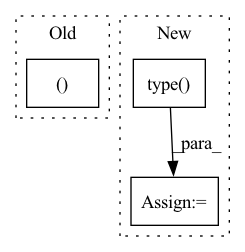

Pattern ID :15836
Before Change
encoding_indices = soft_one_hot.argmax(dim=1)
return z_q, loss, (None, None, encoding_indices)
After Change
loss = self.kl_weight * torch.sum(qy * torch.log(qy * self.num_tokens + 1e-10), dim=1).mean()
encoding_indices = soft_one_hot.argmax(dim=1)
encodings = F.one_hot(encoding_indices, self.num_tokens).type( z.dtype)
avg_probs = torch.mean(encodings, dim=0)
perplexity = torch.exp(-torch.sum(avg_probs * torch.log(avg_probs + 1e-10)))
return z_q, loss, (perplexity, encodings, encoding_indices)
In pattern: SUPERPATTERN
Frequency: 5
Non-data size: 3
Instances Fragment ID: 53611586
Project Name: tgisaturday/dalle-lightning
Commit Name: 39e8b24fa405a4320d7c683e7054ae18ef4563f4
Time: 2021-07-28
Author: jamesk1228@gmail.com
File Name: pl_dalle/modules/vqvae/quantize.py
M Class Name: GumbelQuantizer
N Class Name: GumbelQuantizer
M Method Name: forward(2)
N Method Name: forward(2)
M Parent Class: nn.Module
N Parent Class: nn.Module
M File Name: pl_dalle/modules/vqvae/quantize.py
N File Name: pl_dalle/modules/vqvae/quantize.py
M Start Line: 127
M End Line: 135
N Start Line: 127
N End Line: 138
Before Change
num_batches = int(math.ceil(float(num_generate) / float(batch_size)))
for i in tqdm(range(num_batches), disable=disable_tqdm):
real_images, real_labels = next(data_iter)
real_images, real_labels = real_images.to(device), real_labels.to(device)
fake_images, _, _, _, _ = sample.generate_images(z_prior=z_prior,
truncation_factor=truncation_factor,
batch_size=batch_size,After Change
style_mixing_p=0.0,
cal_trsp_cost=False)
fake_images = (fake_images+1)*127.5
fake_images = fake_images.detach().cpu().type( torch.uint8)
real_embeddings, _ = eval_model.get_outputs(real_images)
fake_embeddings, _ = eval_model.get_outputs(fake_images)
real_embeddings = real_embeddings.detach().cpu().numpy() Fragment ID: 53611590
Project Name: postech-cvlab/pytorch-studiogan
Commit Name: 0591c77840c0e25760f1173ed716fcce57a2a36c
Time: 2021-12-25
Author: first287@naver.com
File Name: src/metrics/prdc_trained.py
M Class Name: AnonimousClass
N Class Name: AnonimousClass
M Method Name: compute_real_fake_embeddings(17)
N Method Name: compute_real_fake_embeddings(17)
M Parent Class:
N Parent Class:
M File Name: src/metrics/prdc_trained.py
N File Name: src/metrics/prdc_trained.py
M Start Line: 24
M End Line: 24
N Start Line: 42
N End Line: 43
Before Change
means_ = buckets_to_means(x, buckets, num_clusters)
means = torch.where(zero_mask.unsqueeze(-1), means, means_)
means = means.squeeze(0)
return means, buckets, dists
def kmeans(x, means, training=True, init=False):
b, h, t, d = x.shape
max_iters = 1 if training else 0After Change
means_ = buckets.new_zeros(b, h, num_clusters, d, dtype=dtype)
means_.scatter_add_(-2, expand_dim(buckets, -1, d), x)
means_ = F.normalize(means_.sum(0, keepdim=True), dim=-1).type( dtype)
means = torch.where(zero_mask.unsqueeze(-1), means, means_)
means = means.squeeze(0)
return means Fragment ID: 53611595
Project Name: lucidrains/routing-transformer
Commit Name: 2042adb06111339b86814500f0c389759b8f6cdf
Time: 2020-05-27
Author: lucidrains@gmail.com
File Name: routing_transformer/routing_transformer.py
M Class Name: AnonimousClass
N Class Name: AnonimousClass
M Method Name: kmeans_iter(3)
N Method Name: kmeans_iter(2)
M Parent Class:
N Parent Class:
M File Name: routing_transformer/routing_transformer.py
N File Name: routing_transformer/routing_transformer.py
M Start Line: 337
M End Line: 344
N Start Line: 306
N End Line: 321
Before Change
P = K // 2
gap = K - (P + L % K) % K
if gap > 0:
input = torch.cat((input, torch.zeros(B, N, gap) ), dim=2)
pad = torch.zeros(B, N, P)
input = torch.cat((pad, input, pad), dim=2)After Change
P = K // 2
gap = K - (P + L % K) % K
if gap > 0:
pad = torch.Tensor(torch.zeros(B, N, gap)).type(input.type() )
input = torch.cat((input, pad), dim=2)
pad = torch.Tensor(torch.zeros(B, N, P)).type(input.type())
input = torch.cat((pad, input, pad), dim=2) Fragment ID: 53611576
Project Name: jusperlee/dual-path-rnn-pytorch
Commit Name: 0184b360691cbecd390a0e1d8f98c95ae29644b5
Time: 2020-02-06
Author: Tsinghua.kaili@gmail.com
File Name: model/model_rnn.py
M Class Name: Dual_Path_RNN
N Class Name: Dual_Path_RNN
M Method Name: _padding(3)
N Method Name: _padding(3)
M Parent Class: nn.Module
N Parent Class: nn.Module
M File Name: model/model_rnn.py
N File Name: model/model_rnn.py
M Start Line: 324
M End Line: 329
N Start Line: 304
N End Line: 310
Before Change
whole_bond_idxs = native_idxs
// 2. ATTRS: encode bond -> attrs
bond_norms = dist_mat[ whole_bond_idxs[0] , whole_bond_idxs[1] ]
bond_vecs = x[ whole_bond_idxs[0] ] - x[ whole_bond_idxs[1] ]
bond_vecs /= (bond_norms + eps).unsqueeze(-1)
bond_norms_enc = encode_dist(bond_norms, scales=needed_info["bond_scales"]).squeeze()After Change
dist_mat = torch.cdist(x, x, p=2)
// normal buckets
bond_buckets = torch.zeros(x.shape[:-1], x.shape[-2], device=device).type( precise)
if buckets:
// count from latest degree of adjacency given
bond_buckets = torch.bucketize(dist_mat, cutoffs)
bond_buckets[native_idxs[0], native_idxs[1]] = cutoffs.shape[0] Fragment ID: 53611583
Project Name: lucidrains/geometric-vector-perceptron
Commit Name: 5a40792004e203e994ed7c0cf6dbf25d7312c8c5
Time: 2021-03-28
Author: ericalcaide1@gmail.com
File Name: examples/data_utils.py
M Class Name: AnonimousClass
N Class Name: AnonimousClass
M Method Name: encode_whole_bonds(6)
N Method Name: encode_whole_bonds(6)
M Parent Class:
N Parent Class:
M File Name: examples/data_utils.py
N File Name: examples/data_utils.py
M Start Line: 408
M End Line: 452
N Start Line: 390
N End Line: 456